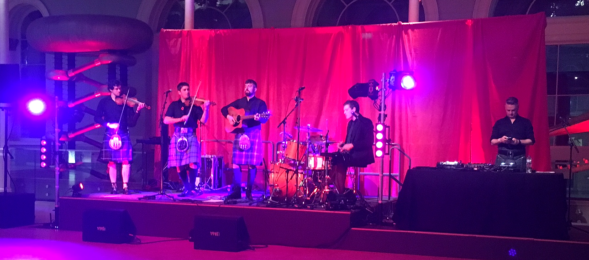

Night at the Museum
Edinburgh, Scotland - November 13, 2017
On a whim, I decided Thursday night to buy a ticket to go to the National Museum of Scotland - Museum Lates event on Friday. The event was centered around the Jacobites and, of course, Bonnie Prince Charlie. With my ticket, I was able to go both to the event itself and see the exhibit in the museum called Bonnie Prince Charlie and the Jacobites to learn about the struggles of the whole Stewart line to gain possession of the Scottish throne. Sadly I wasn't allowed to take photos of the exhibit, but there were a lot of original paintings of the various Stewarts and plenty of jewels, coronation robes, and Jacobite memorabilia.
After I finished at the exhibit, I went back to experience the event. The event had a ceilidh (though I held off on dancing because I have two ceilidhs coming up in the next few weeks) and a place to "pledge our allegiance to the Jacobite cause" by getting a temporary tattoo of a secret Jacobite symbol (I decided on getting a thistle). I also learned how to properly fan myself in a demonstration called "The Language of the Fan" in a section of the museum that mimicked Hawthornden Court and reflected the grandeur of the European Jacobite courts. Lady Anne Maxwell showed us five techniques on how to use a fan to attract a suitor or throw them off the scent. It was loads of fun and involved lots of closed fans pointing to my right or left eye and seductively moving towards the punch bowl.
When the lesson on fans finished, I got creative and designed my own scene from Outlander. I used a printed sheet with Lallybroch in the background and cut out some of the characters from the series to put in the scene. I decorated the scene with watercolor paints. It ended up looking pretty decent, and I have enjoyed seeing it posted on my wall.
In order to avoid the crowd of people at the ceilidh, I went to the natural world part of the museum and listened to Gillebride MacMillan, who was Gwyllyn the Bard from Outlander, sing some traditional Gaelic tunes. He is actually a native Gaelic speaker, which is a rarity in Scotland these days. It was calming to hear him sing Gaelic songs in a very rhythmic way. I was also very impressed that he could sing these songs acapella, but back in the day people probably sang the same way.
The biggest event of the night was the talk Inside Outlander. I found out what it was like to work on Outlander with supporting actors playing Suzette and Kincaid (season 2) and experts on Gaelic and highland herbology. It was fun to hear how they got their roles or jobs as experts on the set; the Gaelic expert was especially a hoot. I was slightly disappointed not to see any of the cast from season 3, but I was still happy to see some of the actors that were in season 2.
All in all, a fun, educational Friday night in Edinburgh!
Cheers!
- Caileigh Marshall